MY BLOG
Welcome to my blog page. In a nutshell, this will be something like my Comfortzble photo journal. Maybe this might becomes more of a diary though, since I do a lot more writing here compared to the bullet points I usually do. I will post something even though I might not have pictures for it, which is something different. I WILL try to add in pictures, though, since I want this to be like journaling with visuals. My newest entries will be at the top, while the oldest ones will be at the bottom.
NOVEMBER 19, 2022 NOVEMBER 17-18, 2022 (Jlab afterschool and then testing) NOVEMBER 12, 2022 (worked on DBQ #2 and then went to get gongcha) OCTOBER 26, 2022OCTOBER 21, 2022
(no pics)OCTOBER 18, 2022
(pics)OCTOBER 17, 2022
(no pics)OCTOBER 16, 2022
(pics)OCTOBER 15, 2022
(no pics pSAT and lunch)OCTOBER 14, 2022
(no pics, stellar and jlab, logs after, fb game)OCTOBER 10-12, 2022
(no pics)OCTOBER 7, 2022
(pics, fb game and jlab)
OCTOBER 3, 2022
This was the first FULL day back from encampment and at school. I cried so many times LOL.
OCTOBER 2, 2022
Last day at encampment. Woke up at 6 and then helped with sheets down in logistics. We went to chow, got back, and then brought everything downstairs. Everyone then went out to prepare for skits. But right before we were going to start, Joyce said Sarge needed logistics from Combat flight. So Diana, Rachel, Joanne, and I went to drive the linen, sheets, and blankets back to the warehouse with Sarge. After we parted and were waiting for the lady to get there, some sentimental songs came up and Sarge was being really just. Genuine and like. Not-Sarge, y'know? He wasn't yelling at us and stuff. He was being really appreciative and just wholesome I guess. I'm too lazy to say all of it here since I have it in #daily-journal anyways. But yeah, at that moment, I realized Sarge really does love us. I tried really hard not to cry that whole time. Anyways, after we got back, we did skits and I think we absolutely killed it.
That night, I called with Senpai and talked about encampment in general. I also cried multiple times. I felt a lot better after talking about it and crying it out. I honestly had PEDS, Post Encampment Depression Syndrome, for the next few days after. I had so much fun. Then, Josie and I called. I finished two word problems for Mr. Chen, and kinda briefed her about some parts of encampment, including singing her our jodies. Anyways, that was it. What a ride.
OCTOBER 1, 2022
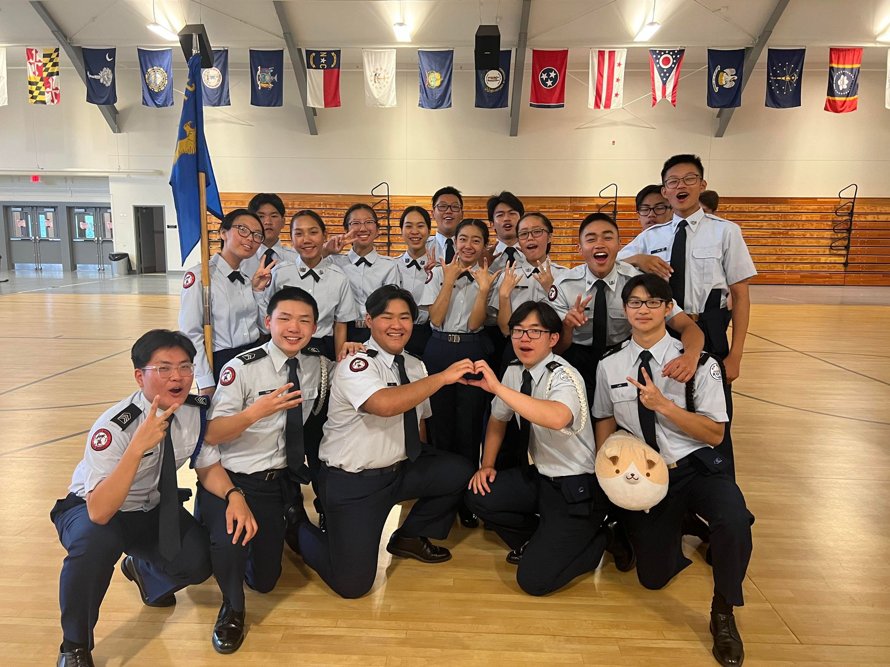 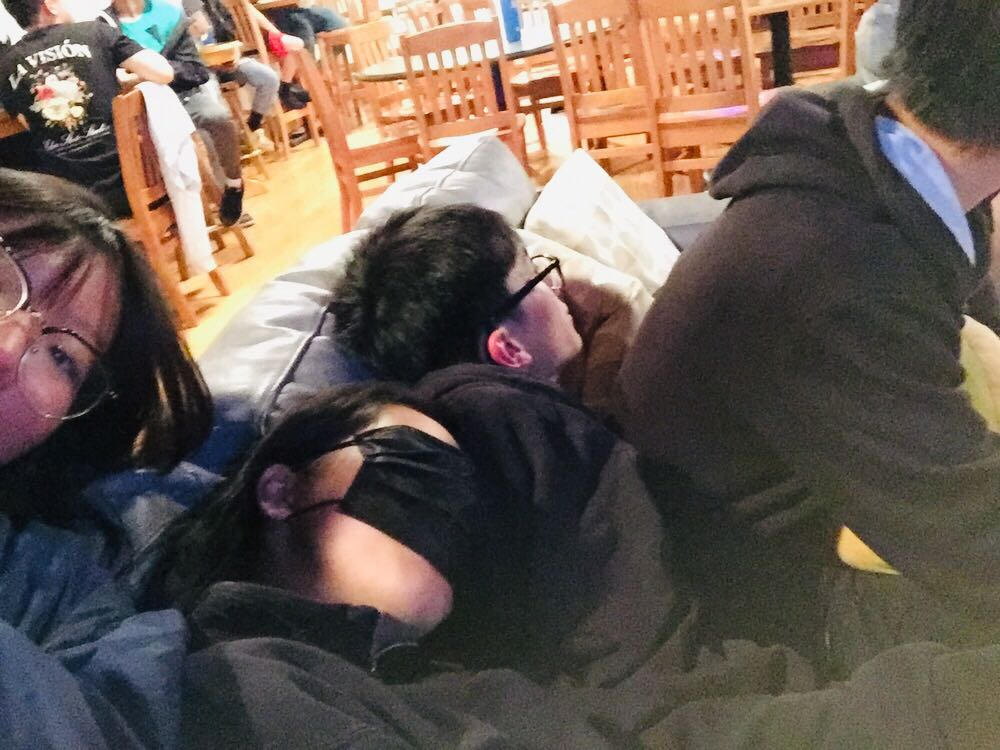 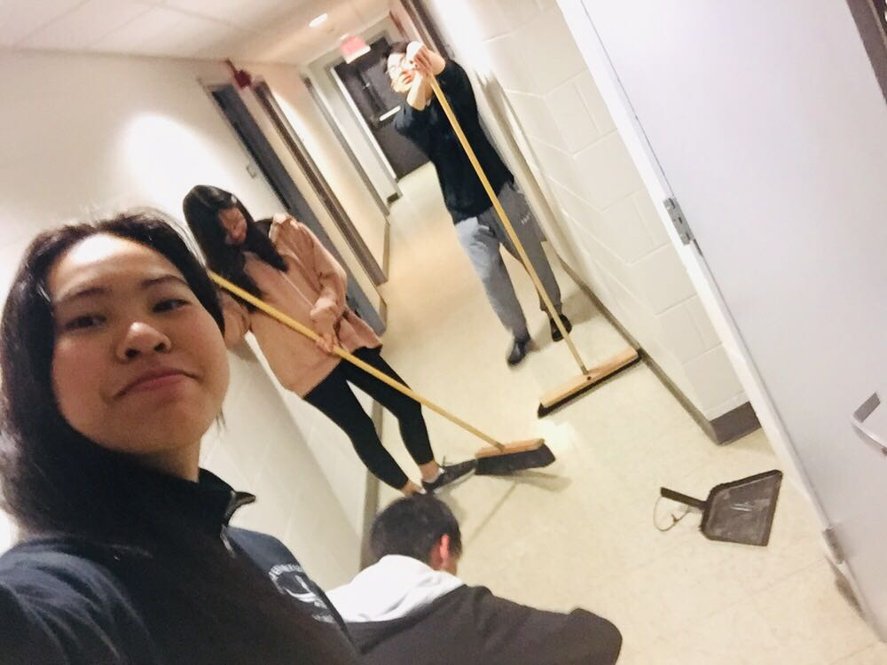DAY 4! Writing this on Oct 17 though. So, PT was in the rain, so wet marshmellows. After chow, we went to the gym flight by flight in sarge's van and practiced drill until time for comp. Sarge talked to us after we were all done and started being sentimental and stuff. I got choked up when he said he's blessed, to have us or something. After picture time, Dnaiel and Andy tried to break my bearing. After we came back, we practiced inspection in which Vincent and Kevin tried to make me lose bearing by kissy kissy in front of me. But what broke me anyways was just Vincent's smiley face. Nick also asked me questions like "how do you say _____ in canto?" At the real day 4 (3rd) inspection, it was really chill. I couldn't tell if I was getting better and more confident or if it was just more lenient, though.
Anyways, afterward, Janice and I volunteered to help Sarge and the boys clean the first floor halls. Arnold and Daniel were being worked by Sarge or something, relaying commands. When we finished, I went to help Diana find her phone, but I passed the senior room just as the seniors were coming out. Vincent was there and would deny me every time I asked for permission to carry on LOL. That was so funny. We then showered and got into civilian clothes to bowling, which I didn't even do. Janice, Elijah, Vincent, and I just styed in a corner of the room on the couch playing MLBB. At one point, I leaned on Vincent and took a short nap. And when I woke up, we started collecting people who wanted to go back early. The four of us eventually went back.
It was so quiet after we went back. Jancy and I filmed a room tour. Then, the four of us sweeped the first floor hallways. By the time we were done, some of the seniors were back already, like Jerry, Ray, Andy, and Vincent. We were just in the hall of the first floor day room standing there and talking about who our favorite seniors were. So many things happened, so I'm just going to link it here. Anyways, we played Exploding Kittens after, and it was a BLAST...no pun intended until I realized it could be a pun. Bran is such a troll LMAO, but mixed with my lack of knowledge on the rules, it led to one of my favorite encampment moments (and this too). Kevin later introduced Silent Exploding Kittens in which we get dropped if we're too loud. Apparently, we got too good at that, so now the next person to be out gets dropped. After one more round, I went to pee and call my mom, and by the time I got back, the rest of them went upstairs to play since Sarge said it was getting late. So until around lights out, Vincent, Joanne, and I just helped Joyce with logistics things.
SEPTEMBER 30, 2022
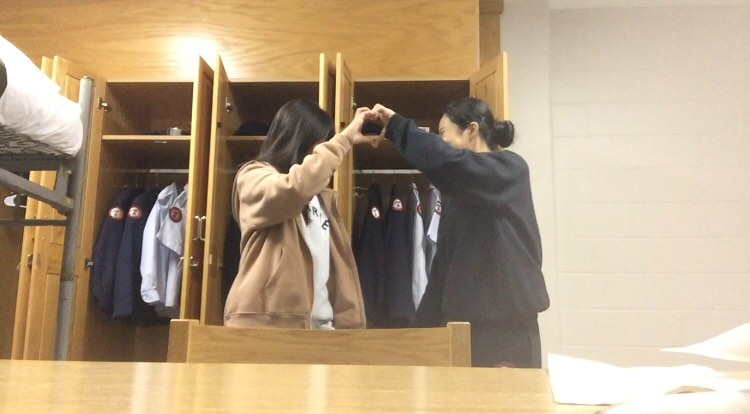 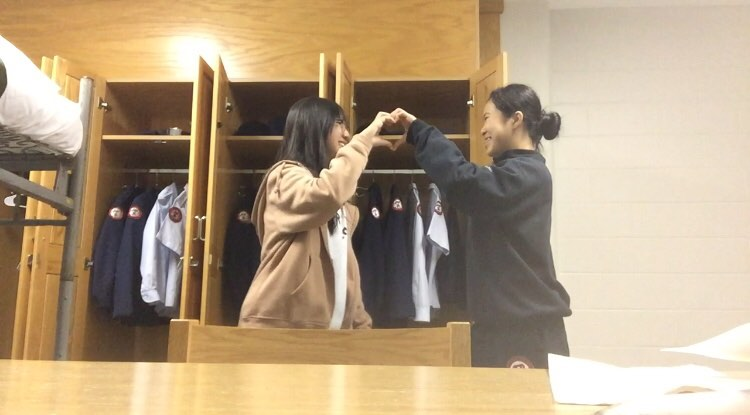Okay so day 3 now (well day 2 of actual training). I was so sore because of PT the previous day. We ate, went back to dorms, and then changed into ACUs again. Then we went to the same place-ish for activities, where we did the LRC (Leadership something course). It's definitely one of my favorite parts of encampment (I say it's like #2 with the rifle simulation). For the LRC, our team (Ray, Vincent Lam, Carlin, Diana, Lin, and I) did activity 7. We fricking SLAYED LOL. So glad I had the right idea of using the rope as a fulcrum for the wooden board. We were supposed to do it in 12 minutes but we did it in about 30 with MUTLIPLE penalties. But at least no one fell into the water. Anyways, I was so proud of myself for kinda leading and stepping up to go across the bridge first. I loved my team. After that, we took the cadet guide and rank test which was iffy LOL. Also, Nick slayed the test so hard he completely forgot to turn over the page.
The big OC (obstacle course) followed lunch. Sarge took seniors to run over the event and in the meantime, I took in control of Combat flight until they came back. While Attack did the course, black squadron took the medical pop quiz and I kinda did bad LOL. Anyways, our flight got the fastest time of 14 something. I missed a lot of the medical questions because I was better at performing physical aid rather than describing instructions. It was close though, cause Delta got 15 minutes something. The seniors ended up getting 13 something.
After we got back from activities to the parking lot of our dorms, T5 announced like which girls' dorms shouldn't be messed with because they were the best ones and Sarge will later bring the boys up there for a walkthrough. My name was called and I later found out we got an 80 and also a merit. For inspection, I got asked by Izzy to "serve," which was funny because by chance, I learned what that was that day. Inspection was pretty chill, and overall, I was a lot less nervous, too. (The pictures above are of Jancy and I practicing for our "GC Protector" poses for our skit.) That night, I got drafted to do CQ shift 2; literally the worst. I tried to do homework but got nowhere. Also so close to passing out MULTIPLE times. It wasn't until 20 minutes before my shift with Pitchada ended that I decided I should really be recording everything down in #daily-journal because I was scared of forgetting. Anyways, that's day 3.
SEPTEMBER 28-29, 2022
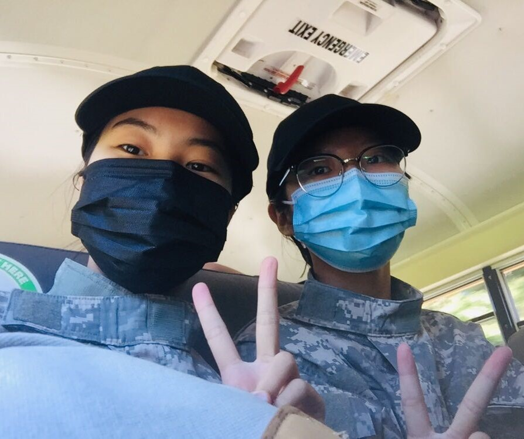 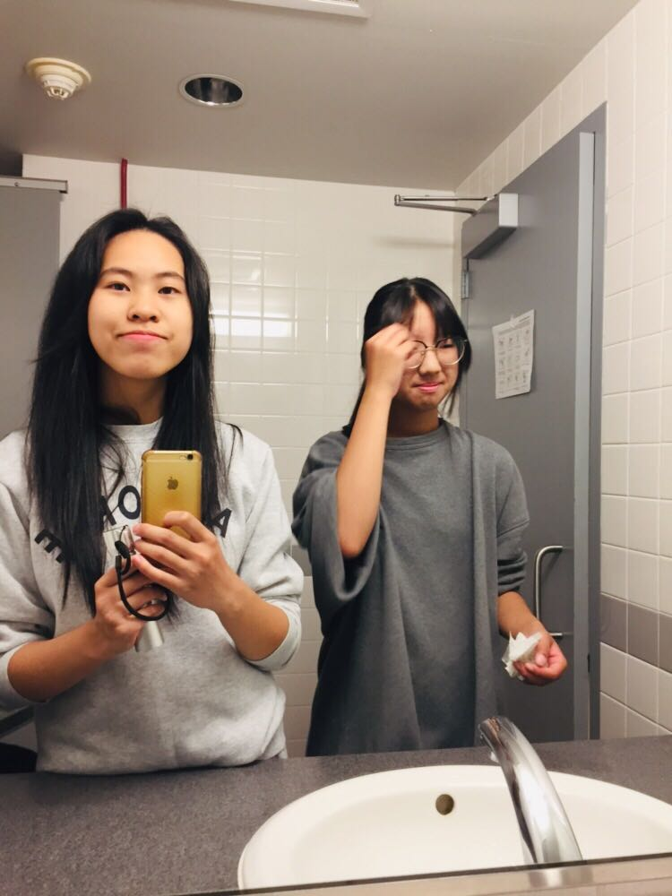
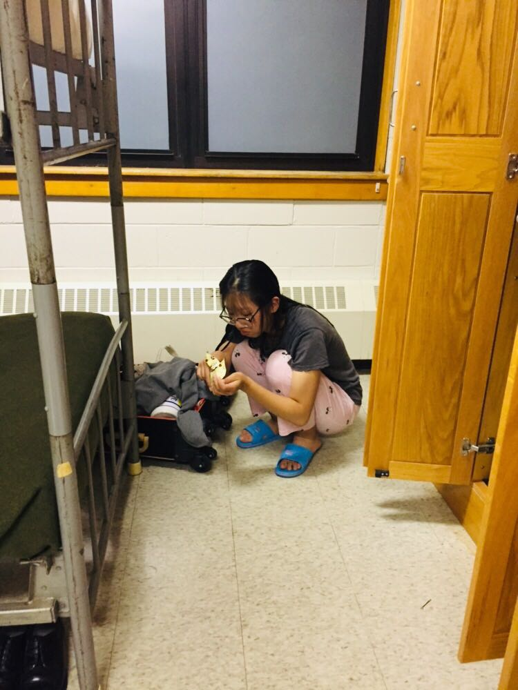
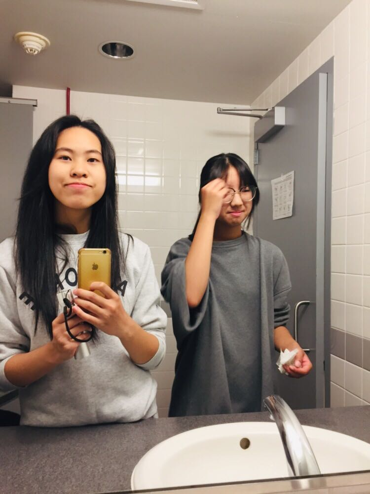
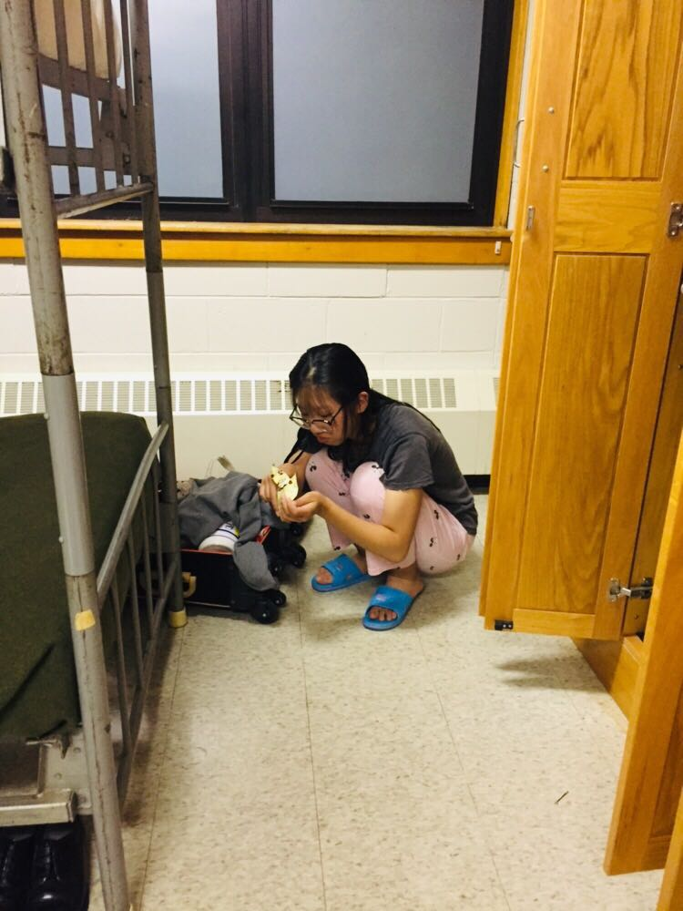
This is so late but like I'm writing this on Oct 16 after the first marching band comp cause I haven't been making time to add to this. BUT on the bright side, I have this in #daily-journal, so it's all good. Anyways, on the 28th, I went in early to write an APUSH essay for ch10/11. (I got the grade back and she said she really liked how I answered it; 41/50 and I'm actually so happy). Anyways, fast forward, load luggage, bus ride, unload luggage, time for lunch. We went to the bathroom with a buncha cadets and after we came out and were waiting for everyone else, Jason said "for one merit, tell me the rank and name of the commander of Holm Center." And so I got the first merit. After we went back, we finished lunch, did other misc stuff, moved luggage, helped another school move, and then finally went to our dorms. After we settled, we went to chow and then went back to clean. I did bathroom duty with Jancy, and that's pretty much the first day.
On day 2, we woke up at 4:45ish, did hair, made bed, PT, chowed, dorm, and changed to ACUs. We then marched a pretty long way to the activities area where we played capture the flag against blue squadron and lost twice. We then ate lunch, marched back, and got a ride from sarge half-way back to the EST(?), which was a rifle simulation training place. The first time, I got a 14/30, the highest so far according to the sergeant. Then the second time I got 24/40 (SUPER HAPPY; also found out Angelo got the same, so now he's my competition). Anyways, after we went back to the dorms, we changed out for inspection. I was so nervous and stuttered a lot with my legs shaking. I still got an 86 from Izzy, so I'm happy. Also, our room got a 73 for inspection the first day. Anyways after inspection, we chowed, practiced drill, cleaned, and then Simone and I did bathroom duty the second night.
SEPTEMBER 16, 2022
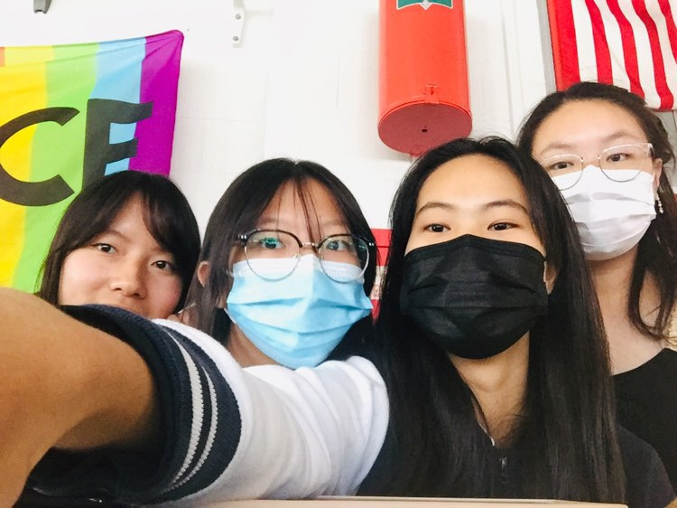 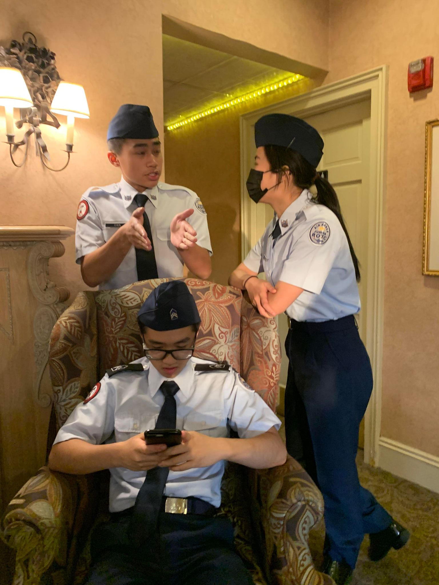 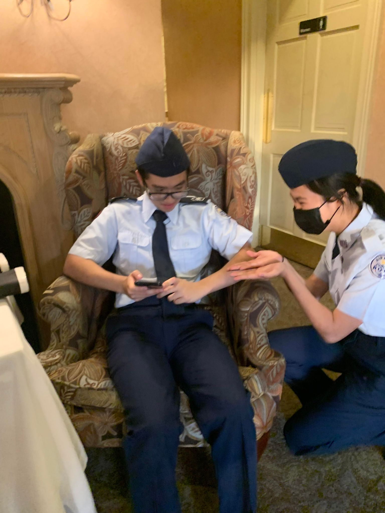 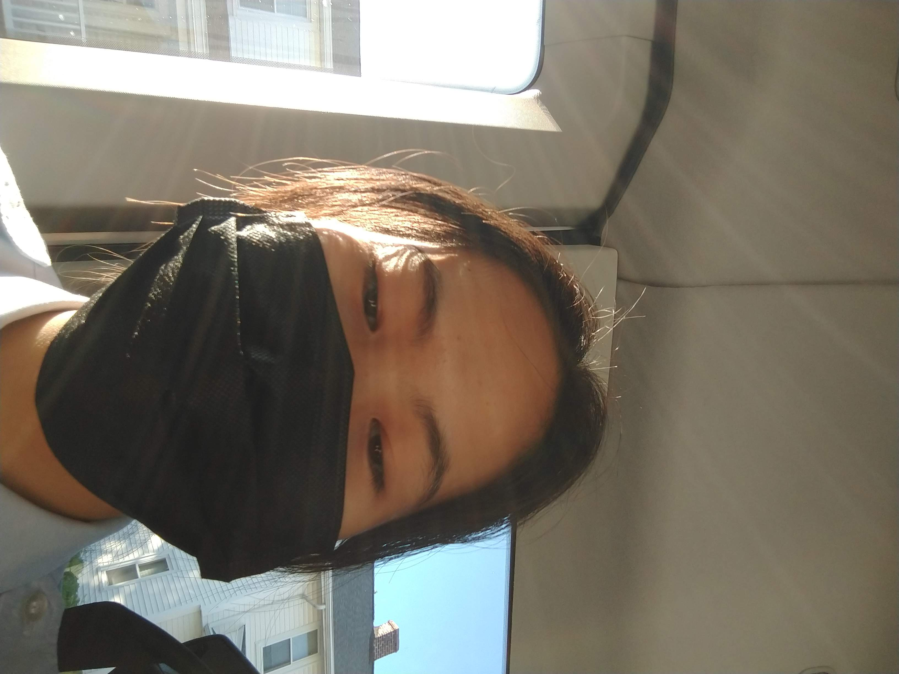Today marks the end of the first full week of school. Since I kinda got roped into doing colorguard yesterday afternoon, I went to school early to get taught by Andy at a little past 6:30. Anyways, today was also the first lab for AP chem, and it was a FREAKING SUCCESS. CAUSE BASICALLY 100% PERCENT YIELD WOOHOO. It's like 100.6% without the proper sigfigs but oh who cares. Another highlight is getting back my precalc test grade after school. I GOT A 49/50. To be honest, I knew I did well, but just wasn't sure if I made mistakes. The one mistake I made was regarding the min/max value for the graphing. I thought it was supposed to be a greater than or less than sign, not an equal sign. Would have been cool if I got a 100% but I'll definitely take it.
Like always, I hung out in logistics after school to help and such. I shared the news about my precalc test with Amy and Lily, and then Lollipop when she showed up. Originally, I wanted to tell her first but couldn't find her. Around 3:50, I biked home to get changed for CG. I honestly had an absolute blast. Our squad was immaculate: Andy, Carlin, Angel, and I. I kinda scratched the ceiling multiple times but shhhhh. Everyone was so patient with me, especially Andy. I don't think I would have had such a great time and did as well without his reassurance and encouragement. My arm was burning and shaking during present arms and I messed up a little at the end, but I think it went well. After Sarge dropped some of us off, Carlin offered to walk me home. And goddamn, I love that. I have a soft spot for anyone who walks me home LOL. Anyways, what a pleasure to have such an amazing experience as my first CG event. Today was a good day.
SEPTEMBER 14, 2022
Not going to lie, I don't exactly know what to say here because I have too many things to say. Okay so, this happened I guess, lol. It's still on my mind. Like everything. I hate that it's been on my mind almost constantly. On a brighter note, even though there's this annoying fixation that my brain has, I feel like maybe I'm getting what I actually needed, closure and emotional detachment. Also, it's crazy and stupid. The last five entries in my daily journal were all related. Can't believe I shed tears. So silly. I find it interesting how the mood of them changed from sentimental > satisfied > content > desolate, helpless, frustrated > empty. Damn that looks so sad on paper. Anyways, here's some thoughts about that from today.
Okay now moving on to TODAY. Pedaled to the metal this morning and sped up four flights of stairs cause I was so scared I was going to be late. I was sweating like hell. I think I did pretty good on the precalc test. And I gave Elijah the contract and read it out to him aloud after school. It was a blast. I knew it was going to funny, which is why I wanted to explain it to him in person. It's one of those moments where you just had to be there. Anyways, I sent him home with it to get it signed.
Afterward, I left to eat at b cafe after logistics closed. It felt odd, not in a bad way, eating alone at a table for two. It honestly felt sort of nice. I'm trying to recall what it felt like right now, but I can't really put myself into that position anymore. Maybe it's because that feeling was so foreign to me that I didn't, and still don't, know whether to embrace it or ignore it. Okay, so after that I biked to Zoe(?)'s house for 101 Art Studio Training. She had me read over so many things and I honestly was about to pass out so bad. We had a good talk though, so I'm excited to start on Sunday with Jessie.
SEPTEMBER 5-9, 2022
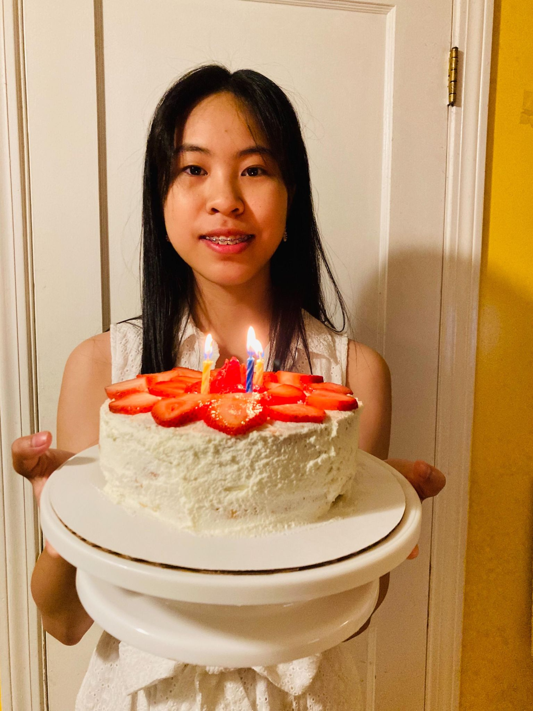 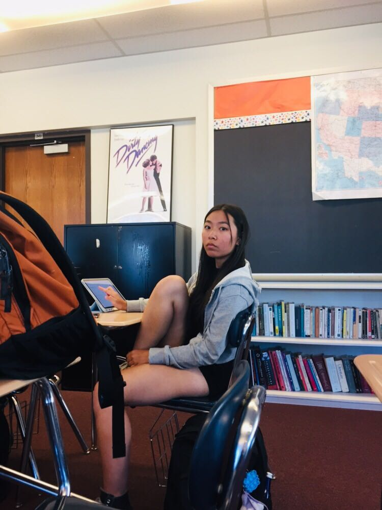 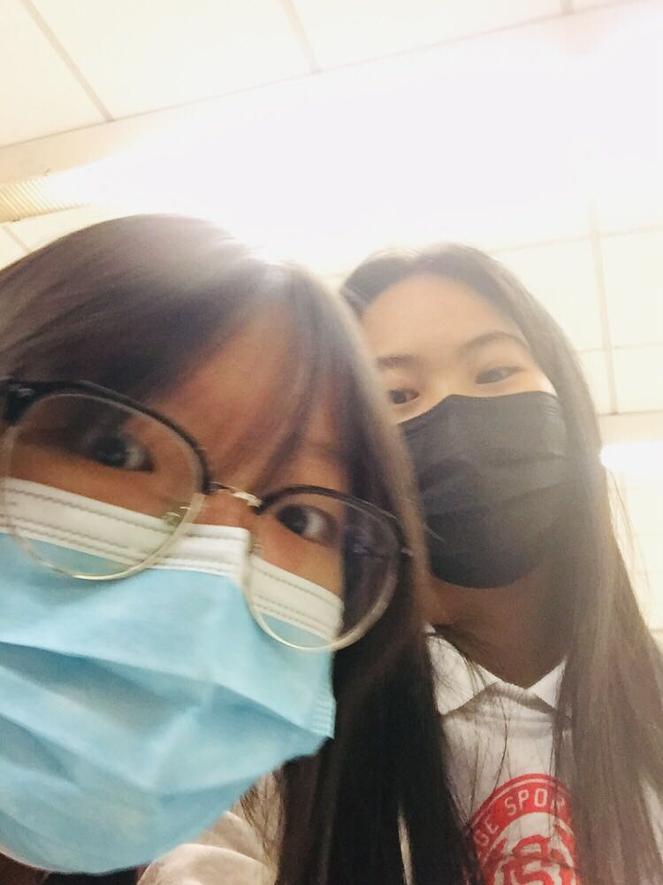 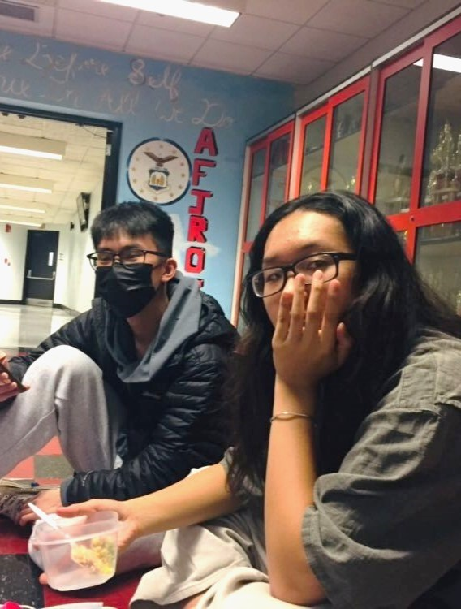 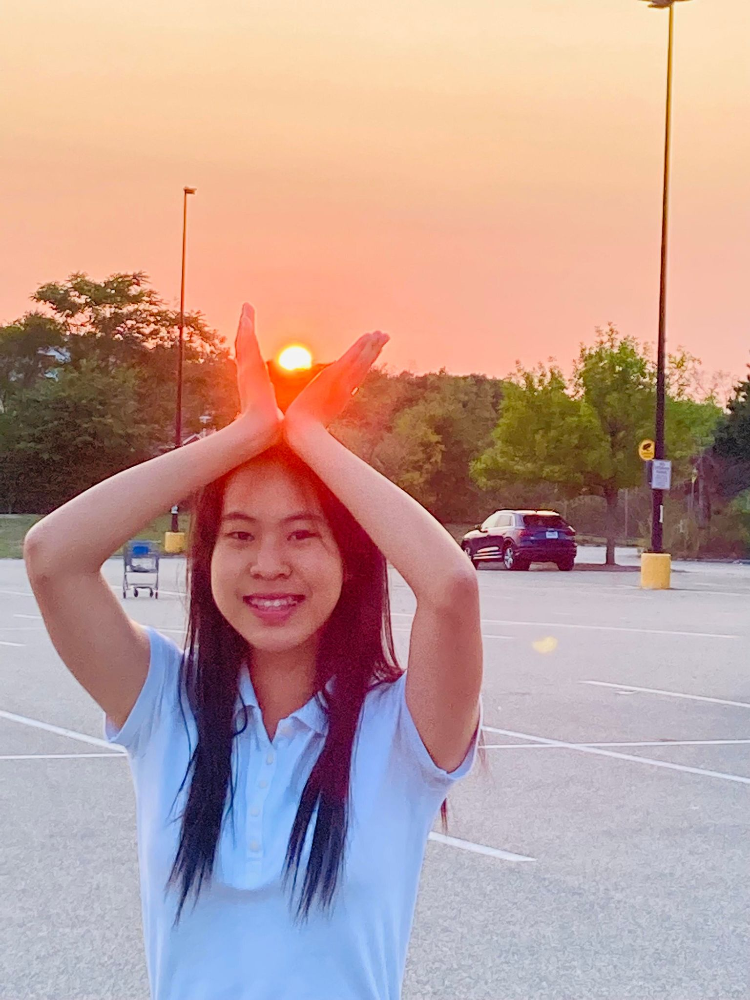To start off, birthday well spent. I just had to put a picture here to commemorate, y'know? I didn't have enough to make an individual birthday entry so here it is. Anyways, the first day of school was so underwhelming LOL. I woke up and didn't want to wake up. It didn't feel like a first day back, but more like I'm already three months in. I really liked Mr. Chen and Señor Diaz. Mr. Chen's way of talking is just freaking gold, and Señor Diaz has Huan vibes. I stayed past 4pm helping in logistics after school. Anyways, in addition with band, I was totally worn out. I was freezing out on the field.
Second day was actually better than the first, except I shut off my alarm and fell back asleep with the lights on. Totally would have been late if my mom didn't come check in on me. So yeah, typical day. Review for the Alg 2 assessment in pre calc, and then got so excited for AP chem next block. There's an autistic (I think..but don't wanna assume) guy who sits to my left and uhhhh. He blurted out to Mr. Kessler something like "You look like you would be single." Okay so moving on, started taking notes in APUSH, went over syllabus and discussed book questions in AP eng, went over medical forms in ROTC, and went back to Mrs. Hansen's for study.
After school, I helped out at logistics and basically took my first solo client, aside from the pants. It was under Arnold's name though. When logistics was about to close (a bit past 4pm), Jinglin (Lollipop) and I went to help Justin and Lily with the trophy room board. Eventually, Josie and Vincent joined. OH YEAH, ALSO GOT MY FIRST CLIP OF SENPAI (but I cut the camera too short ughhhhh). A bit later, Sarge showed up and told us to take down the flag. Josie, Vincent, and I went, and it took a whole while. We did't leave school until almost 5:30pm. It was an absolute blast. After my mom picked me up, we went to BJ's to hunt for supplies, found nothing, and bought chocolate. Then went to Walmart, and as we drove up, I was like THE SUN IS SO PRETTY, so here's a pic. Yesterday (Fri 9/9) was a good day.
SEPTEMBER 4, 2022
Today, I fully finished the highlight video for Jancy and I's outing. I started uploading footage and selecting songs the night of September 2nd, and pretty much finished last night around 10:30pm. BUT Lightworks was being a pain last night and the whole morning so I guess I just had to restart it, since my computer was running super slow too. After some minor adjustments and stuff, it's all set now. I've added it to my portfolio and uploaded it to YouTube. Anyways, that's pretty much it for today. Oh right, let me share it with Janice to see what she thinks of it. [BACK AND HERE'S HER REACTION]. OH ALSO, I BEGAN AND CAUGHT UP WITH PARALLEL WORLD PHARMACY TODAY, AND IT'S SO CUTE/WHOLESOME/GOOD. Biggest reaction found here.
SEPTEMBER 2, 2022
Today, I went to the mall, twice. I was going to buy a necklace from Pandora, courtesy of my mom for my birthday gift. But, we went to check out Lovisa, which had more slections, cheaper, and less valuable...as my mom put it. I got a few things from there and two pairs of clip-on earrings, kinda cute. I tried them on my way home and realized that the daisy ones weren't right. Both of them were for the right ears, since one didn't face outward when I put it on my left. Anyways, the total was a whopping $120ish. Got some rings, necklaces, a bracelet, and earrings. I tried to match them as much as possible, so technically, there are two full sets I could wear. I later went back around 5pm to exchange the daisy earrings. I also visited Janice in the morning and got free nuggets.
AUGUST 31, 2022
Day three of band camp completed. Overall, I think band camp went really well (writing this as of 9/1). Anyways. I got home and binged Ya Boy Kongming!. CAN I JUST SAY. THIS ANIME IS SO EFFING UGH. All my reactions can be found here. This anime is so wholesome and cute and, just. Ugh. Kongming's stratagem are so clever. Eiko and Nanami's voices are so struck a chord. Kabe's verses are so effing fire. The ED is one hell of a bop. "I'm Still Alive Today"... I could go on and on about this. I finished the anime before midnight last night and cried at the ending scene. The black screen, with credits, and then the replay icon staring back at me. It hit really hard. It was a good day.
AUGUST 28, 2022
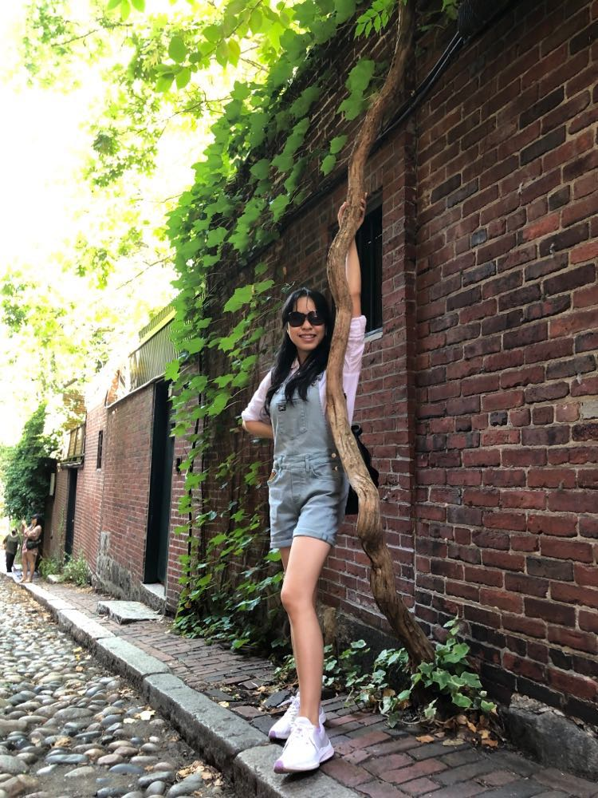 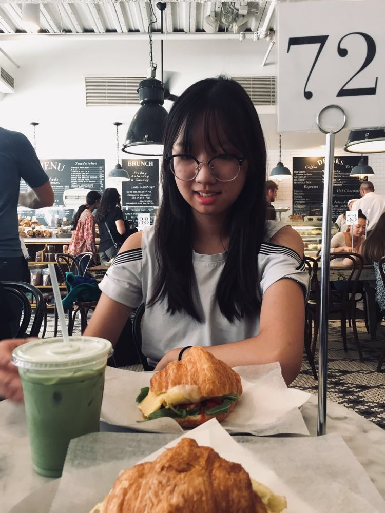 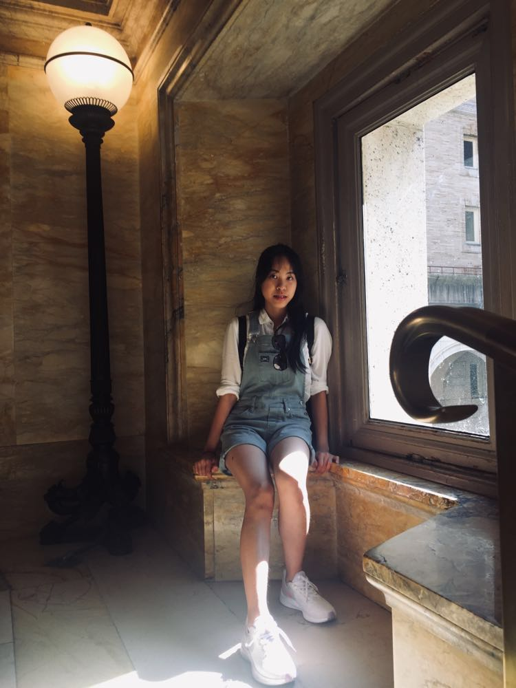 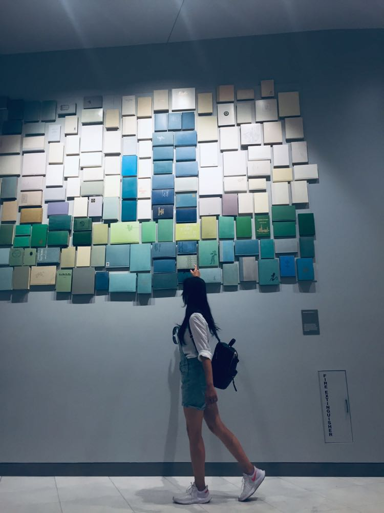
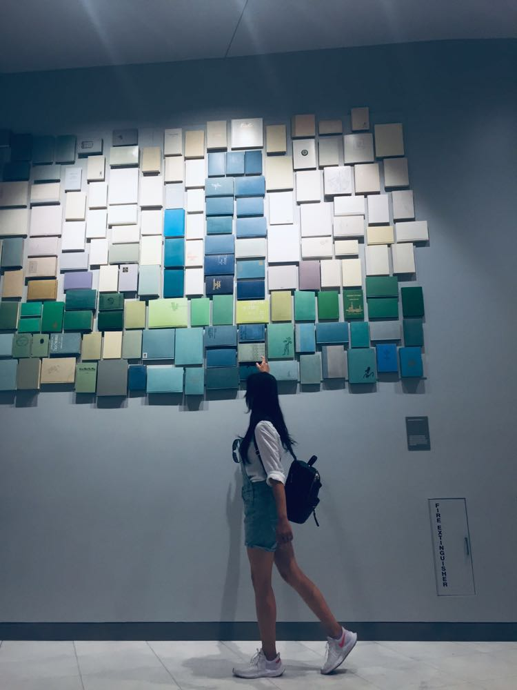
I looked forward to this day so much. And I'm really happy that it went almost exactly how I planned it, with some adjustments, because Janice felt bad about taking pictures in front of houses. And also because battery was running dangerously low during Down Time 3, and I couldn't risk using Google Maps to find Fan Pier Park. It was already hard enough trying to find Taiyaki NYC by just looking at the map without using navigation. Anyways, let's go through the day. I went to KHHS watering, went home, got ready, arrived at Chinatown earlier than planned. Janice and I were going to go to the Brattle Book Shop, but I found out on Google Maps that it doesn't open till Monday.
Next up, we went to Acorn Street. This was when it really began. We spent about a whole hour there taking pictures LOL. I went up and down the hill taking pictures of Janice and then on the way down, I taught her how to take good pictures of me. We have so many pictures from this one location. Moving on, we went to Louisburg Square but only walked around mainly because Janice didn't wanna take more pictures of people's houses. Then, we went to the Boston Public Garden before lunch at Tatte Bakery & Cafe. It was packed, but we got food without waiting for that long. We each had a croissant sandwich ($11~) and it was amazing.
Next, we went to the Library, where Jancy read, I got lots of candid shots, and then took a short nap. After we got out, Jancy bought a lemonade for six bucks. I kinda drank like $2 worth so I paid her back. Following that was the Christian Science Plaza, the place that Laura went to last time as I found out. We got what Janice called "Pink Panther" (?). We skipped Worcester Street, because it was more houses and took the train (green/red) back to South Station. We couldn't find the station where the train was heading to Gov't Center for a hot minute. I tried asking but then we found the station across the street LOL.
This is now Down Time 3 / Snack. Our battery percentages were dying, as I mentioned earlier. We managed to get Taiyaki under the guidance of Jancy though on the way, we passed the streets we were supposed to turn at so many times. The taiyaki ice creams melted so fast and it went dripping down our hands. We ate one road side...ANYWAYS, we were going to Fan Pier park but then I thought we got lost, and then saw silver line. So, we opted for that instead and that was the end of the outing. I went to Jancy's house afterwards to airdrop and exchange pictures. In total, we have just a bit more than 700 pictures. What a day. Here's the itinerary by the way :).
AUGUST 26, 2022
This morning, I watered for KH. Then around noon, I went to go pick up my last check from YW and got pizza. I ate when I got home, took a nap, and then went out to GongCha. Josie had invited me out earlier before I went to QHS. I spent a whole four hours there. It was so unproductive but I had an absolute blast with Josie and Lily. Highlights: kisses on the cheek, Josie talking about her first impression of me (me waving), Lily's first impression of me (shy, but not anymore), Josie talking about my first Discord messages to her (please help), talking about how we became friends, etc. I got like no work done but I'm still so happy I went. It ugh. I really had a ton of fun. Oh yah, I also finished the itinerary for Sunday's outing with Jancy. Today is a good day.
AUGUST 23-25, 2022
I am writing this past 10PM on the night of the 25th. To start off. Drill camp. Was. AMAZING. I did almost no drilling, aside from reviewing beats with Lily and Phuong for a bit today (3rd day). So, here's the run down. I went to logistics to hang on on the first day, reading The Great Gatsby on my phone while logistics worked. Joyce got me considering about joining logistics. Second day, I told Joyce my decision!! - that I want to be trained by her. So, the whole day, I pretty much watched logistics work and learning about where things are, how things work, etc. ALSO STOLE DRINKS FROM LILY AND JOSIE LOL., but mostly Josie.
And today, Vincent and I took on our first patron, Hayley. Also today I stole Lily's drink. Mocha is pretty good actually. ANYWAYS CHAOTIC AS ALWAYS. Another highlight was cupcake eating, in which I didn't want the frosting, so I got Vincent to eat it for me while I took the muffin. I carried Lily on my back: successful. Lily tried to carry me on her back: keyword "tried;" unsuccessful. Josie and Lily did the carrying thing to me again. Vincent and I stayed like 45 minutes late to keep Joyce company and to help. Senpai and I had a little exchange. Vincent walked me home, discussing ROTC in our year (competition, drama, personal opinions, etc). Today was a good day. Cleaned my room in the morning, finished my book, its notes, and AP bio ch3 reading. Also one week of detox completed!
AUGUST 21, 2022
 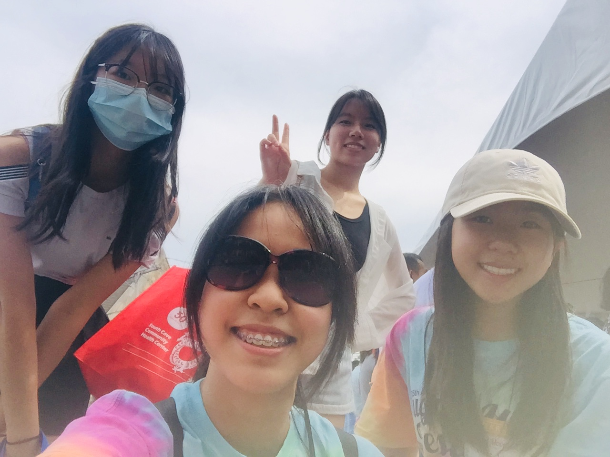
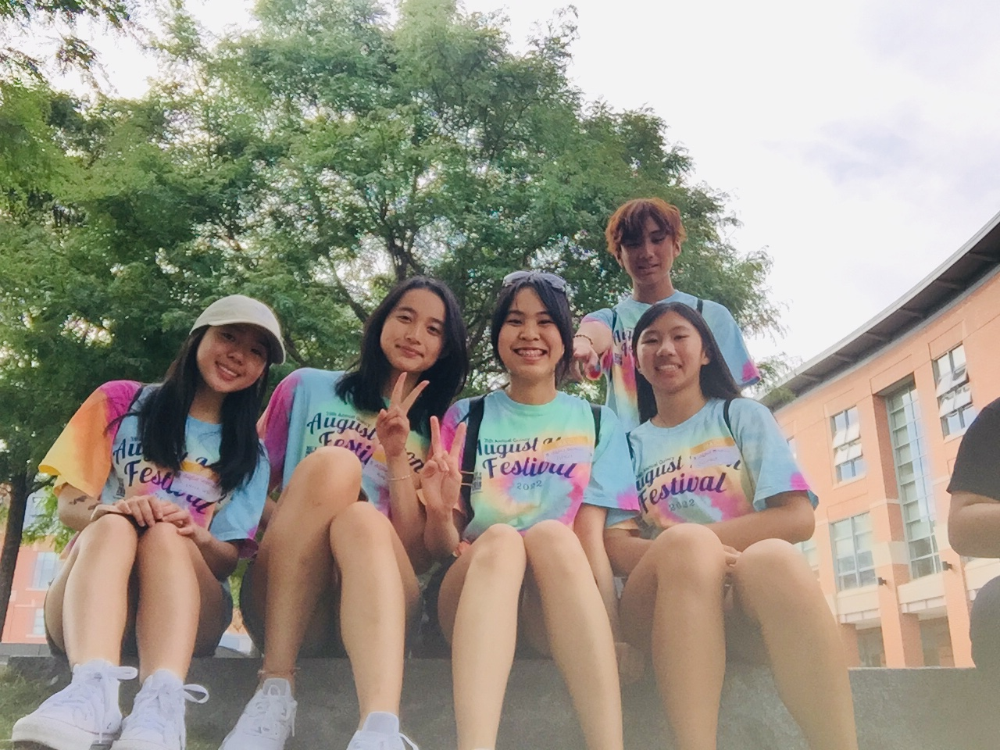
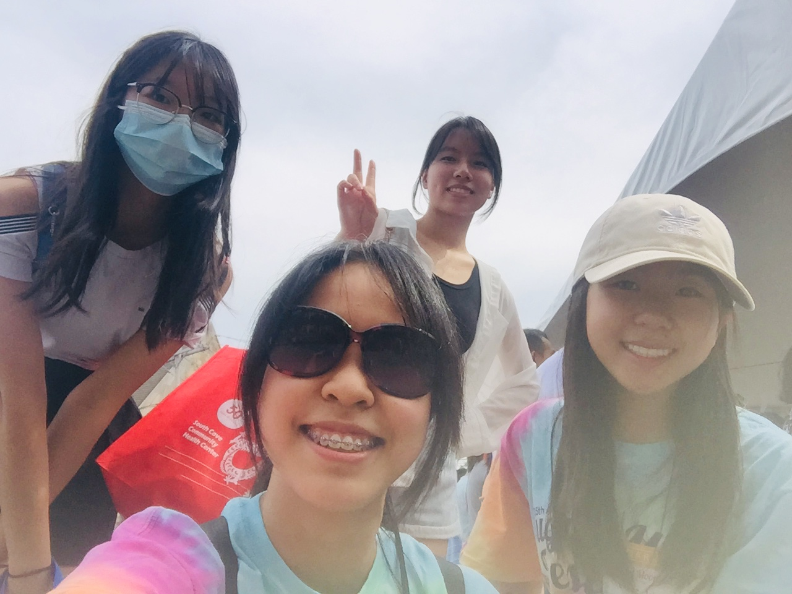
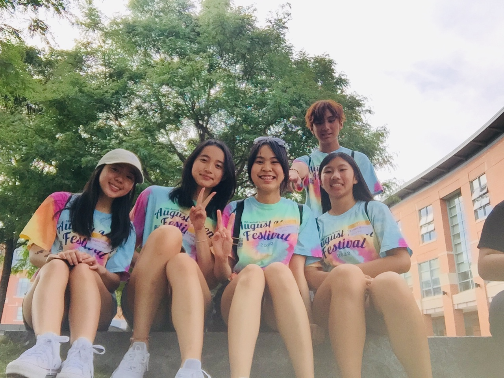
AUGUST MOON FESTIVAL TODAY! (Well, yesterday cause I'm writing it at 8:30AM the next morning) ANYWAYS, it was alright. Last year was a lot more fun because we had more SV members last year. For like the first two hours, I was reading cause there was nothing for me to do there. I managed to read 50+ pages before I got home (cause I read while managing the Arts & Crafts stand too). Kim got a line of mini tattoos down her leg. Chloe got two Gru's. I got a rainbow ("gayness is forever"). At lunch time, I met with Ms. Zou (WAIT I GUESS I CAN'T CALL HER THAT ANYMORE CAUSE SHE'S MARRIED). Well, she will always be Ms. Zou to me. We then caught up over lunch.
I ate so much. I got this $13 voucher for Ren Sauce that got me two tiny lamb skewers and that was it. BUT MY SPONSOR (jk Ms. Zou) had extra vouches and I got a fried dough with a lemonade. She got me a boba from YoCha afterward, too. I had to pee so many times after that. Anyways, Eric came to visit and everyone loves him as always. Oh right, Jilin came, Laura, Jancy, Renee, and Lyna came. Vince Vince and Isabella also came but I didn't get to say hi. Anyways, after I got home I started organizing content for SV rewind. I tried to read the last 50 pages to meet my quota of the day but then I passed out. Oops. It was a good day :)
AUGUST 18, 2022
First full day of Detox. I feel great. Actually, really great that I managed to do what I intended to do. I felt ugh about finishing my book, but I pushed through and did it. But what I'm happiest about today is finishing the chem packet for summer. I did the last three pages. It sounds very little on paper but I will try not to let that diminish my sense of accomplishment. Because I did it and it took hours. And I'm proud of myself. Anyways, I also got into that new slow burn I picked up two days ago. IT'S GETTING SO GOOD UGHHHHHHHHHHHH. I watched the new episode of Call of the Night and some Mother's Basement for some Spring/Summer anime recs. Can't wait to get into them. Also can't wait to start my morning tomorrow.
AUGUST 17, 2022
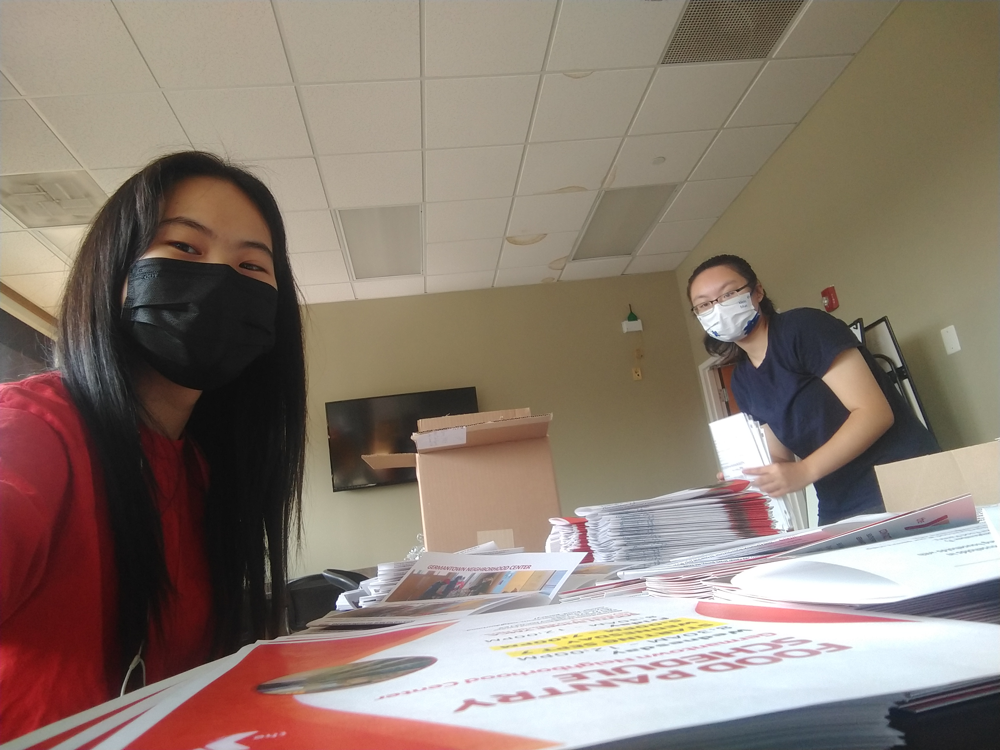 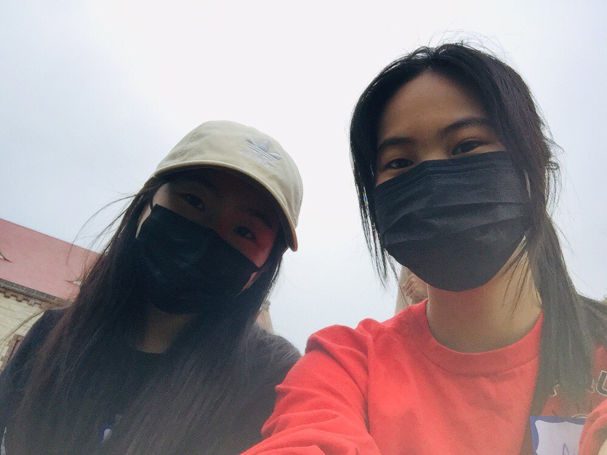
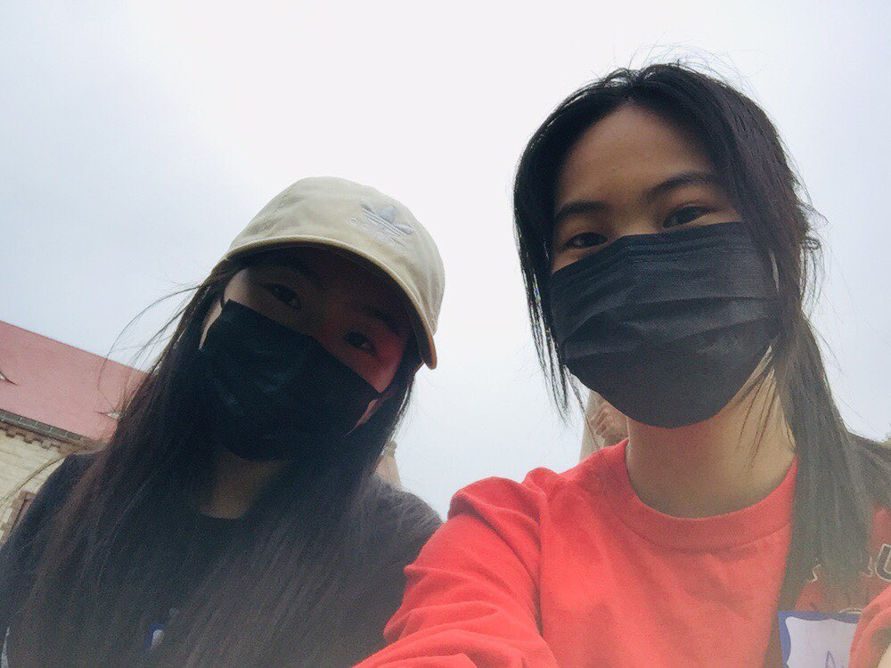
Today was a rollercoaster day. I volunteered at GNC with Amy in the morning and got pizza for lunch there. And then in the afternoon was the August Moon Festival bonding thing. We literally got pizza again. Kinda sick of it by now. Anyways I met May, whose name I thought was Mary at first. She's so nice. She's friends with Dom and honestly we hit it off REALLY WELL. SHE LITERALLY CARRIED DURING CHARADES TODAY. GOD, WHAT AN MVP. I was the one acting and she was on a ROLL. That was the hightlight of my day. But like, the turning point was right after the event, when I started walking home alone. I had a really good talk with Chloe this evening. I also got a lot out of my system; that counts as self-care too, right?
AUGUST 16, 2022
Yo what the actual fak. Thirty minutes before I put down my phone to sleep, I was so happy with what I accomplished ("today is a good dayYY"). And then comes a breakdown. Like I haven't felt like that in years. And then I couldn't fall asleep after that. Which was horrible because I thought that crying would make me more tired, but it just made my mind couldn't stop racing. So I tried changing locations and brought everything down to the floor and slept there. At some point, I fell asleep. And in the middle of the night, I woke up and brought everything back up to my bed and fell asleep in almost an instant after getting back to my soft bed. Crazy.
AUGUST 15, 2022
Senpai came back last night, and today we went to Vivi's to catch up. I left at like 3:15 but I walk too fast LOL. I realized that I would be there 15 minutes early if I don't slow down. Like always, I can't, so I made a pit-stop at Elijah's house and played a brawl in MLBB. We played outside his house in that shaded area right next to it. We lost, too, when we were ahead in kills. After that, I went on, peaked inside Vivi's as I walked by to check if Senpai was already there (he wasn't; I still arrived earlier after a brawl??). I then saw Elijah walking towards me (had no idea he was like 200 feet behind me). Anyways, I felt awkward loitering so I went inside the library. Texted Senpai that I was there. He said he's there. I didn't believe him, but then I saw him. And I HID SO FAST (can't believe my first instinct was to hide???).
At Vivi's Senpai talked about everyone at flight school's "nicknames" and showed me some fun things in his album. He brought out his flight checklist book and went over a bunch of flying procedures with me. After, we went to visit Renee at pTea. Was going to use a pickup line on her but then he said it before I could. We then went to Parker playground. Sat on the swings. I tried asking him why he wanted to come here since he said earlier that he wanted to go home. Didn't give me an answer. Some time later while we were at the bench, he pulled out a whale plushie for me (now that I'm looking back, that's actually so sweet haha). When we said part ways, I asked for a hug and told him welcome back and that I missed him even though we talked everyday. ALSO I FINISHED ALL MY SPANISH SUMMER WORK LITERALLY 20 MINUTES BEFORE RIGHT NOW (11:40PM). Today is a good day.
AUGUST 13, 2022
This morning, we went mattress shopping cause it's no-tax weekend. We ended up ordering two, twin for Eric and twin XL for me. And then in the afternoon, I finished the latest chapter of ToT (Ep7 Pt II) and caught up with Call of the Night (Ep6). God. I love it so much; all my reactions can be found here. What am I going to watch now? Oh yeah, I also cut/trimmed my bangs today. Pretty cute, as of now, but I'll see after I wash my hair tomorrow. Anyways, around 5:30 or so, I went out with my mom to play badminton. We got back around 7:00. It was amazing. I haven't had fun AND got exercise like that in a while (gyming doesn't count!). I know for a fact that my arm will hurt like hell tomorrow, but oh well.
AUGUST 12, 2022
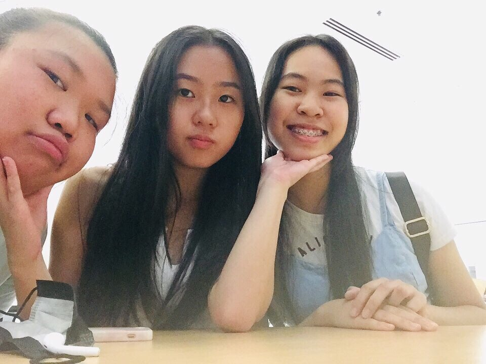 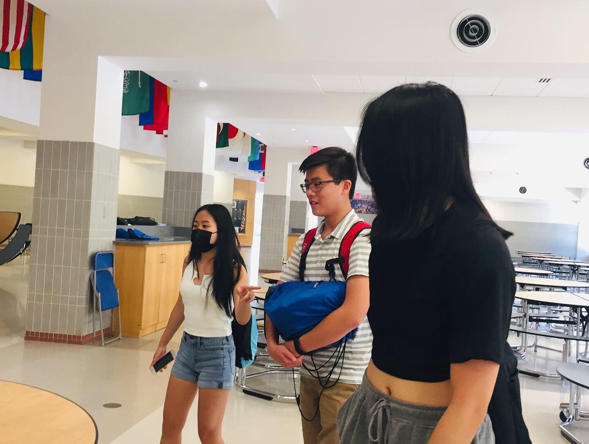
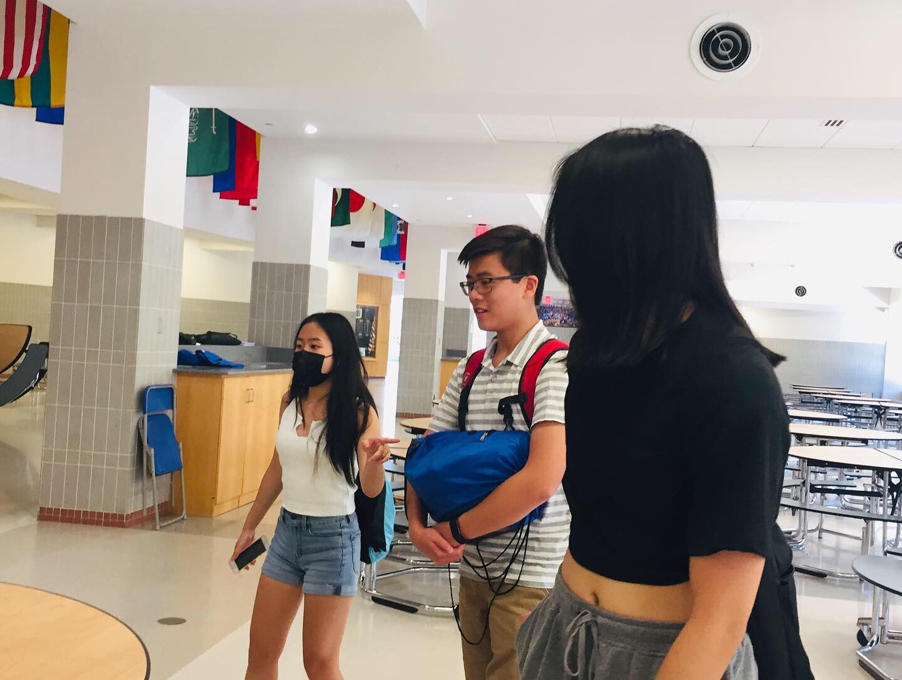
Today is the last day of clases for YouthWorks 2022. It was our celebration where we signed out our checks and had lunch together. Chloe carried out the "YW Institute '22" signatures" for our graphology experiment. Not sure if we really deduced anything though, since everyone signed, not print. This was when we really bonded with Vanston. As we walked home (him to work and Chloe to the T), we managed to get some verbal adoption agreement going on. He's now officially Chloe and I's little bro and we're his big sisters. AAAAAAA this is so goddamn cuta haha. That's it for today.
AUGUST 11, 2022
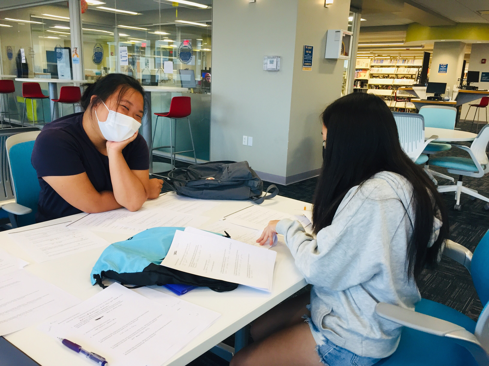 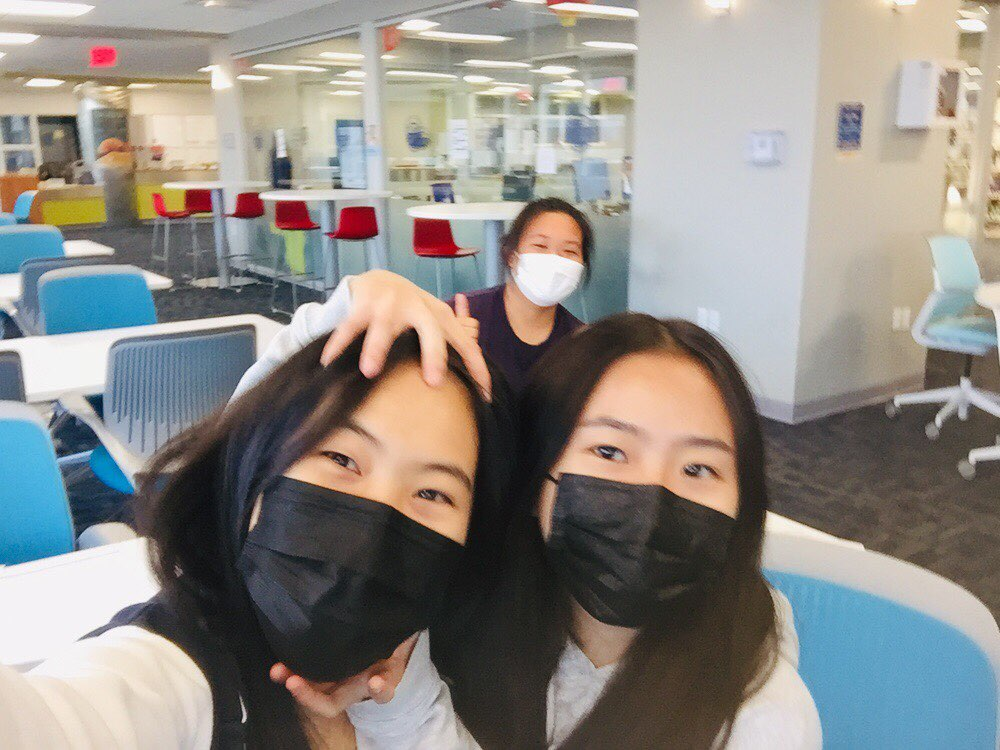 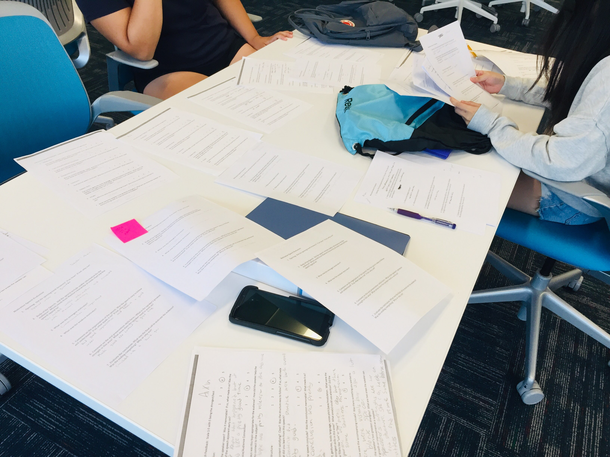Today is the last day of clases for YouthWorks Institute 2022. What a ride. I kind of consider yesterday to be the end and today to be the epilogue. After all, yesterday's ending was way more climatic. Chloe and I were talking after lunch while waiting for her bus about how ending speech class was more satisfying than comp class today because it felt like we actually accomplished something. Today, we just end off comp class after finishing our finals. So it was pretty anticlimatic.
Anyways, the pictures are to commemorate finishing classes and during our investigation for finding out who did each feedback sheet belong to. Chloe and I were so determined. Kim left just a bit earlier, and then Jazzy came from her job a while later. We didn't make that much progress on deciphering handwriting, BUT when we saw Vincent, Chloe asked him to write his name on a line paper. And we had a breakthrough. What we thought was Crystal's handwriting turned out to be Vincent's. We were so sure, too. Around 12, Fanny, Jazzy, Chloe, and I went to Crush Pizza to grab lunch, and then I went to work, and later my annual check-up. That's pretty much it.
AUGUST 10, 2022
Today is the last day of Speech and Communications class. We ended really nicely with a heated debate on friends vs. family. It was such a satisfying end. One highlight during the Group B motivational speech was Tan Dat's speech on making a schedule and sticking with it. He showed his own Summer schedule, and at the end, Dr. Kornhiser said that she noticed there isn't time for a personal relationship. Everyone laughed, and at that moment, I was just thinking how goddamn funny is it that she called him no bitches in the deadest serious way possible.
After class ended, Chloe, Kim, and I went to QHS, where they found out that there was no work for them. So, I ate blueberries in the cafeteria while they went to the bathroom. On our way our, Chloe was gushing about how she loves the color blue so much (her hoodie, purse, airpod case, drawstring backpack, etc). And then she made an out-of-character noise, I suppose (at least according to Kim). Nothing fazes me really cause I make weird noises, too. So I shared that fact, and that my sound effect for desperation sounds like a moan. And it was then that Chloe did the unspeakable. We all cracked; it was absolutely hilarious and unbelievable.
AUGUST 6-7, 2022
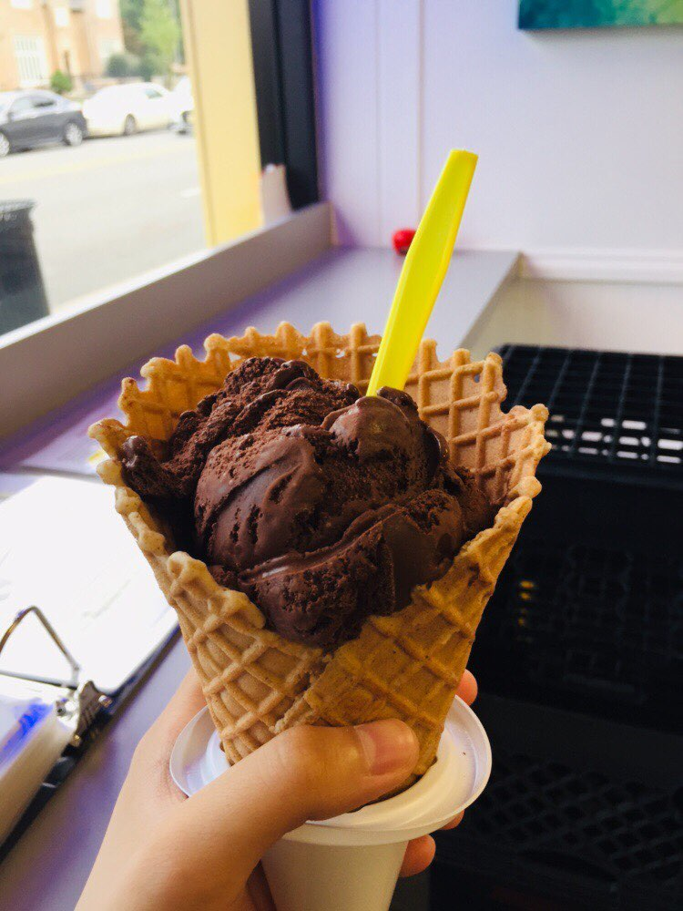 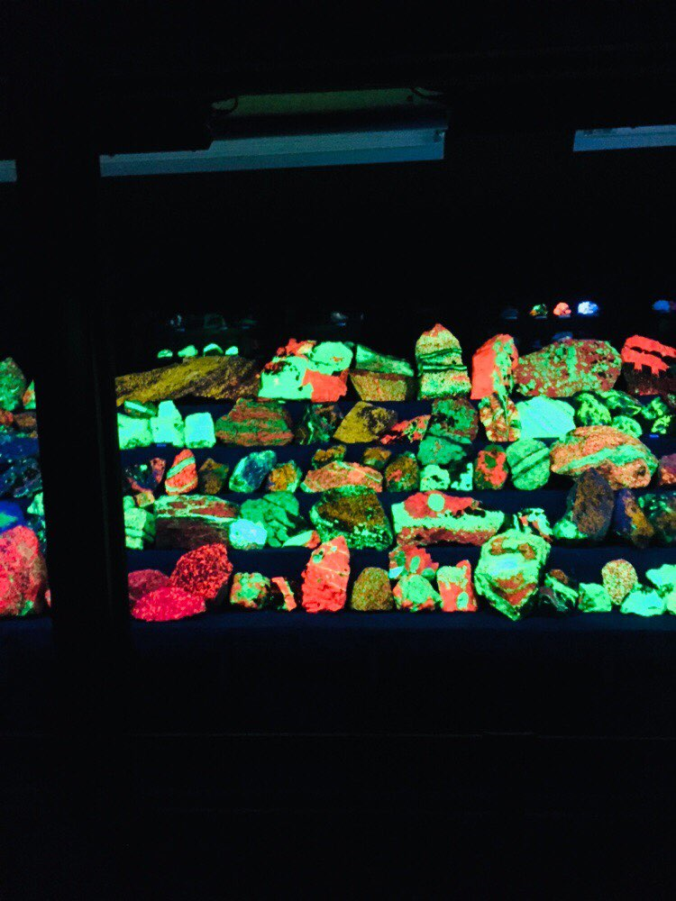 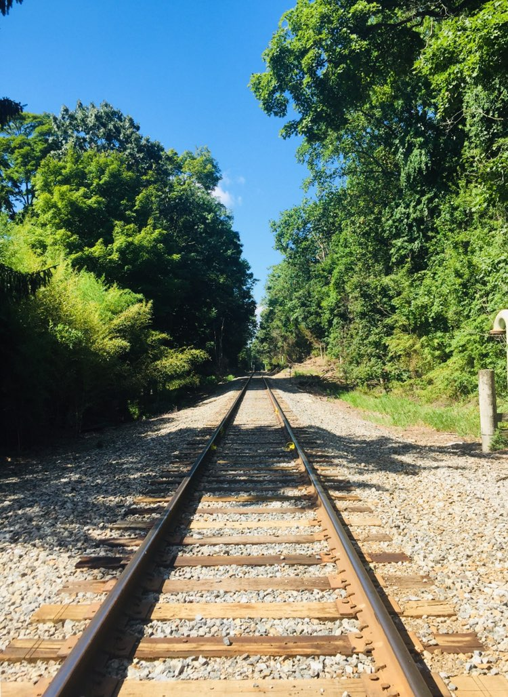 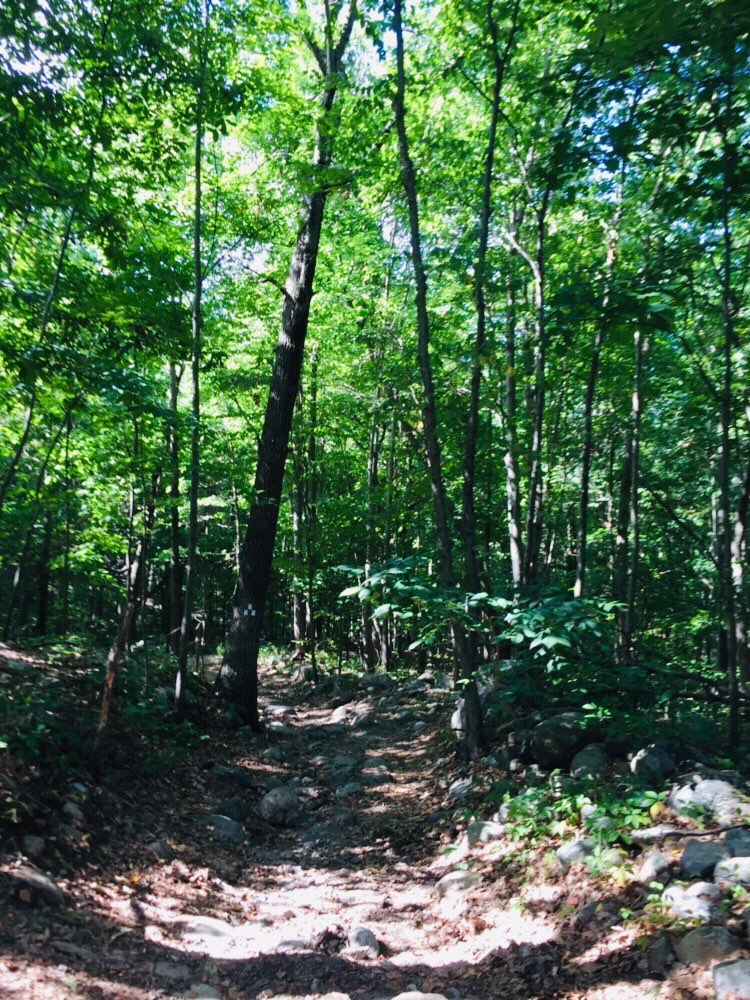 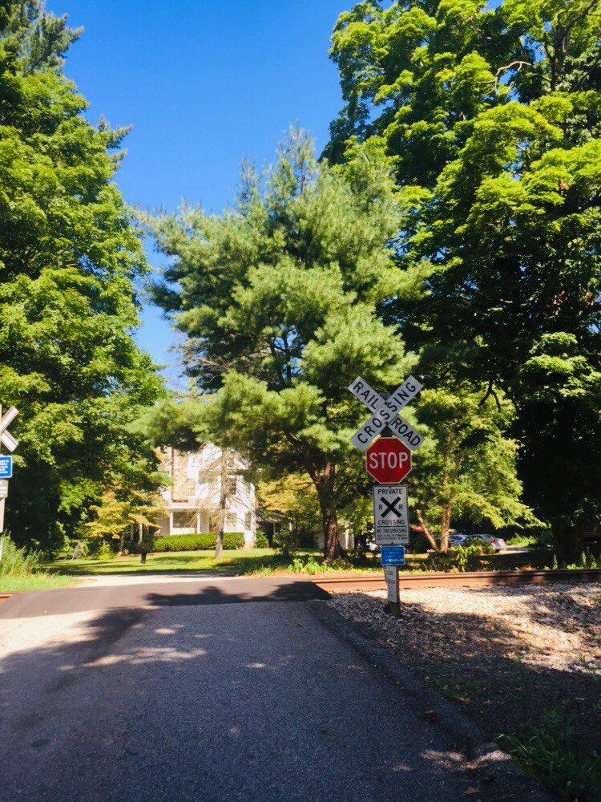I haven't been taking pictures and all lately. What a shame. Anyways, I went to New Jersey last weekend (8/6 - 8/7) and boy was crazy. It's been almost three years since I've been. On the 6th, I had bagels for breakfast, skipped lunch for an early dinner, and then ate ice cream after dinner. Then, we went to the mine/quarry to look for glowing rocks. It was pretty cool. Neon orange and green were the most common colors. We did find some blue ones though, and a few pink ones. I was sweating, which surprised me because I didn't expect me to be that into it LOL.
The next day, I slept until around 8:30. I had pancacks, bacon, and almond milk for breakfast. After that, we went for a short hike. For lunch, we had the leftover pasta salad from the night before and some other things that I can't remember. We played some games, and then the kids went to the lake while I helped Grammy with a favor. I drew on giant marshmellows to make them look like stormtroopers for Otto's birthday cake. For dinner, we had pizza, roasted cucumber, and roasted eggplant slices. When it was present time, Aunt Brianna really had us in the first half, an iron for Otto. Turns out it was to heat up the decorating beads (the next two presents from them). After the party, we decided to drive back that night instead of waking up at 4 the next morning. Worked for me cause I had a motivational speech to write for Speech class on Monday! I woke up at like 6 the next day and sped run it. (Got a 94% teehee).
JULY 18, 2022
Woke up this morning and felt another bump on my head. I guess we didn't notice it last night because the most obvious injury was the place behind my ear. But apparently, there is a bump on the back of my skull. I went to class like normal. And everything was alright, aside from feeling a bit dizzy the whole day. The teacher asked the class what are some body languages of someone who is trying to flirt. I kept looking over to Kim and winking at her througout, so I suppose it was inevitable that she eventually raised her hand and answered "they wink at you."
Another notable moment was when I made a pun during break time. Chloe had a picture of Vincent and wanted to come up with a way to show up without being awkward. Near the end of break, Kim asked why Chloe had a picture of him in the first place. Somwhere down the line, I made a pun about Chloe being a pop-arazzi, which is the name of the hand sanitizer Kim carries around.
JULY 17, 2022
L.O.L. This morning, I went out to wash my shoes with my mom. She was washing hers and Eric's while I was washing mine. After I finished scrubbing, I stopped Asian-squatting and stood up. I was getting light-headed and closed my eyes. For a moment, I was reveling in the feeling of stretching out my legs after squatting down for so long. That was the high before the downfall. The next thing I knew, I was on the concret. My head is pounding and my whole arm feels numb. I'm wailing and hyperventilating while my mom is panicking. I fainted and hit the back of my head on concrete after getting up too fast. What a way to start a Sunday. Anyways, everything still hurts and feels numb. So lucky that I didn't crack my skull. I took a fat nap (roughly 3:30 to 7:00) and had the most interesting dream I've had in a while.
JULY 16, 2022
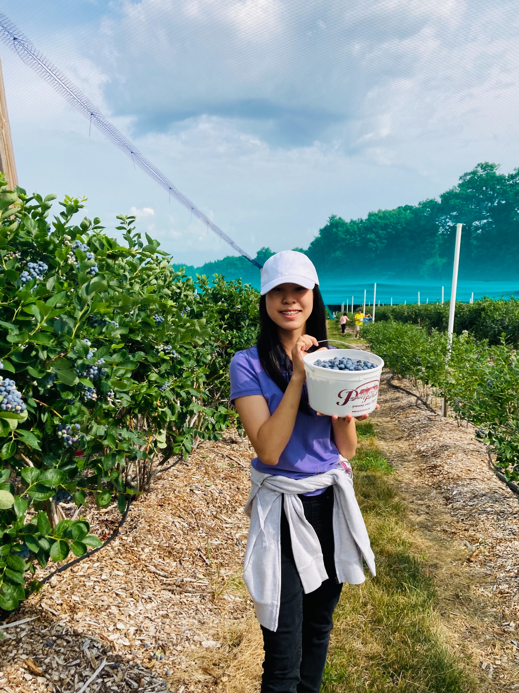 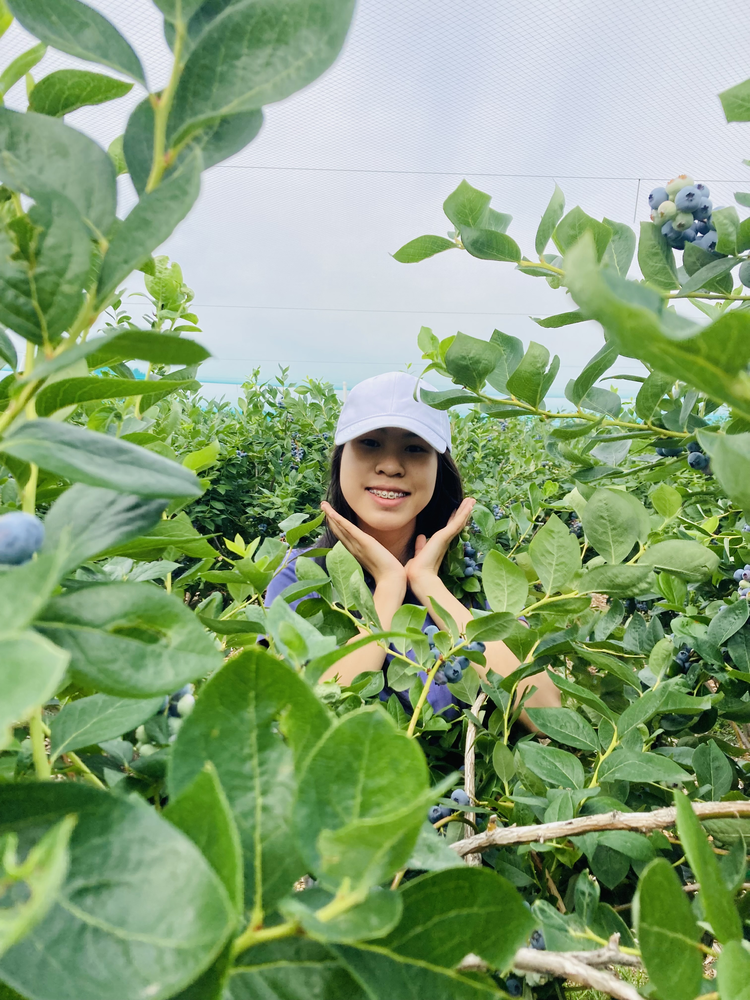 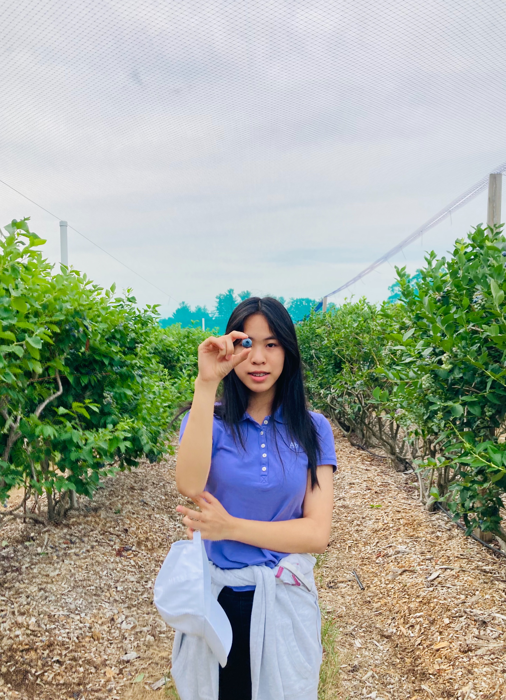 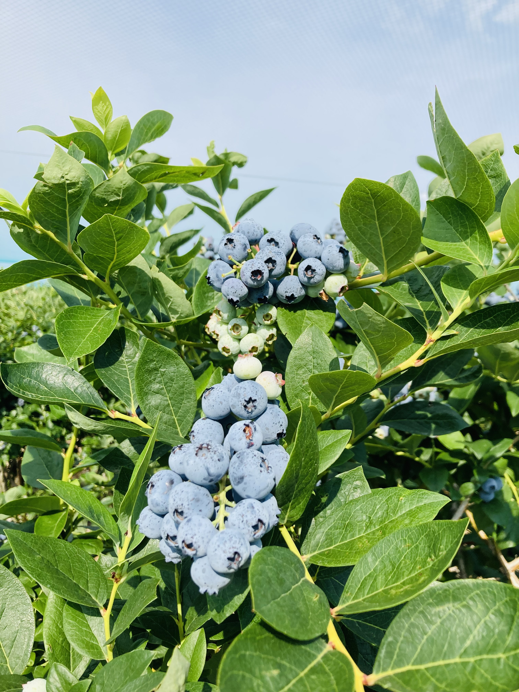 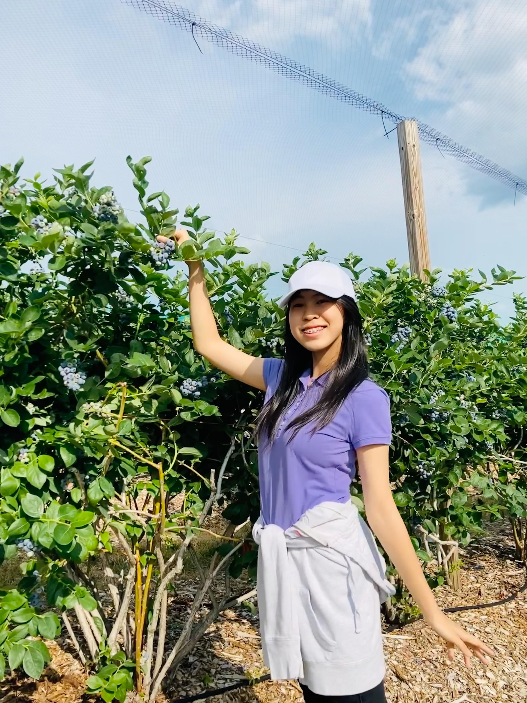This morning, I went blueberry picking with my parents, Eric, grandma, aunt, and cousins. This year, it was a different "field/section" than the place we've always gone to the other years. The blueberries this year were smaller than the previous years, who knows why. Anyways, we made do with what we got. After I got home, I spent the rest of the day working on the NAMI Walk 2022 highlight video.
I've been putting off that project for nearly two months now. Half the reasons was me being too lazy, and the other half was that I completely forgot for a good chunk of time. I finally decided I was going to get it done, and I did. After all, I said to Jules that I was going to probably make a highlights video. Plus, I was going to put it on my portfolio. Anyways, I got it done. It's cute, I liked it, and so did Jules. I guess if I put my mind to it, I can really just finish something like that in one day. I just play mind games with myself sometimes.
JULY 15, 2022
Today was the first YouthWorks training thing at Quincy High School. We talked about some soft skills, like safety, initiative, dependability, punctuality, professionalism, etc. The safety segment took the longest because there were a few videos he showed. It got dangerously triggering because it almost showed a traumatic work place injury that led to death. Other than that special mention, nothing interesting really happened. After a good while, I started getting the verge to pass out and tried to hard to fight it. My butt hurts from sitting. I got my paycheck though, and we were out two hours early since we finished two hours early.